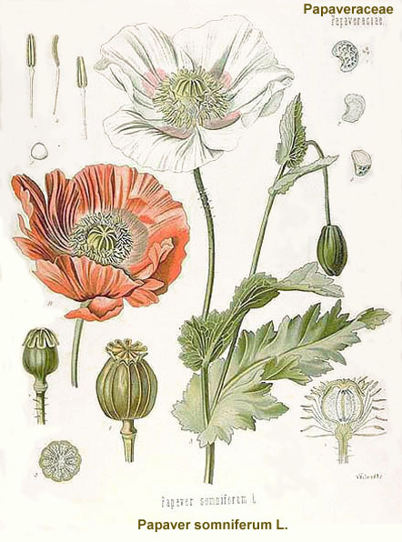
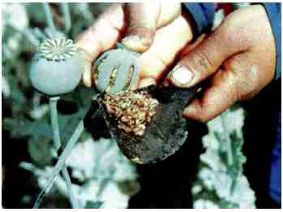

Os usuários de drogas opiáceas experimentam sensações de bem-estar, redu ção da ansiedade, bradicardia (redução dos batimentos cardíacos), diminuição da frequência respiratória, intenso relaxamento, sono, analgesia e perda de apetite. São drogas que causam forte dependência física e psíquica, além de desencadear o fenômeno da tolerância.


Fig. 13 - Extração de látex (ópio) a partir de incisões nas cápsulas imaturas de Papaver somniferum. Fig. 12 - Papaver somniferum L. (papoula ou dormideira).
É o suco leitoso (látex) extraído por meio de incisões nas cápsulas imaturas (frutos verdes) do vegetal Papaver somniferum linneu (Família Papaveraceae), também conhecida como dormideira ou, simplesmente, papoula. O sumo é seco ao ar livre e forma uma massa marrom gomosa. Após a secagem, é transformada em ópio em pó ou grânulos. A planta de onde se extrai o ópio apresenta, quando adulta, de 1 m a 2 m de altura, preferindo regiões ensolaradas. Sua maturidade ocorre em dois meses, e com quatro meses já fornece frutos (5 a 8 frutos por espécime), colhidos artesanalmente nas primeiras horas do dia, quando é maior a concentração dos princípios ativos. O ópio é consumido há cerca de cinco mil anos no sudoeste da Ásia (a China foi um dos grandes consumidores), em ilhas do Mediterrâneo e no Oriente Médio. Para fins medicinais, alguns países possuem permissão legal de cultivo da papoula. O ópio bruto provém de diversos países, como o Afeganistão, Myanmar e Laos, atualmente os maiores produtores. Também figuram como produtores significativos a Colômbia e o México. O ópio bruto contém mais de 20 alcaloides, sendo os mais importantes:
A) Formas de uso A forma mais comum de uso é a fumada em cachimbos especiais, com um pequeno orifício no qual a bolota de ópio é introduzida. Entretanto, o ópio também pode ser ingerido ou mascado.
É um produto sintético derivado da morfina (fármaco proveniente do ópio), cuja síntese deu-se em 1874, em busca de um substituto da morfina, com a finalidade de evitar a dependência causada por ela. Em 1898, a heroína começou a ser comercializada como medicamento de combate à tosse. Com o passar dos anos, verificou-se que a heroína possuía uma capacidade de causar dependência muito maior que a morfina. Assim, em 1906 foi proibida nos Estados Unidos e em 1913 teve sua produção suspensa pelo laboratório Bayer. A popularização da heroína como droga de abuso ocorreu nas décadas de 1960 e 1970, quando soldados americanos retornaram da Guerra no Vietnã dependentes dessa droga. A) Formas de apresentação É um pó finíssimo que pode se apresentar sob a forma de tabletes, cubos, bolinhas, etc. A cor varia muito podendo ir do branco ao amarronzado. B) Formas de uso A heroína (também conhecida como diacetilmorfina) é usada por via injetável, aspirada ou até fumada, sozinha ou na associação com a cocaína (mistura conhecida como speedball). C) Questões legais O ópio está incluído na Lista das Substâncias Entorpecentes (Lista A1), sujeitas a notificação de Receita “A”, constante da Portaria n.º 344/98-SVS/MS. A Papaver somniferum está incluída na Lista de Plantas Proscritas que Podem Originar Substâncias Entorpecentes e/ou Psicotrópicas (Lista E), constante da Portaria n.º 344/98-SVS/MS, atualizada pela RDC n.º 39 da Anvisa, de 9 de julho de 2012. A RDC n.º 70, de 22 de dezembro de 2009, estabelece que excetua-se do controle estabelecido nas Portarias SVS/MS n.º 344/98 e 6/99 a importação de semente de dormideira (Papaver somniferum L.) quando, comprovadamente, for utilizada com finalidade alimentícia, devendo, portanto, atender legislação sanitária específica. A morfina está incluída na Lista das Substâncias Entorpecentes (Lista A1), sujeitas a notificação de Receita “A”, constante da Portaria n.º 344/98-SVS/MS. Sua comercialização, porém, é restrita a ambientes hospitalares. A heroína está incluída na Lista das Substâncias de Uso Proscrito no Brasil (Lista F1 – Substâncias Entorpecentes), constante da Portaria n.º 344/98-SVS/MS.
Substâncias que atuam como depressores do SNC, podendo ser usadas como sedativos, hipnóticos (tratamento da insônia), anticonvulsivantes (tratamento da epilepsia), pré-anestésicos, auxiliares no tratamento da hipertensão e nos estados de ansiedade.
Fig. 14 - Cápsulas de barbitúricos. São psicotrópicos do tipo depressores do SNC e hipnosedativos. O ácido barbitúrico, precursor desta classe de compostos, foi obtido primeiramente em 1864 por Adolf von Baeyer (1835-1917). O primeiro barbitúrico usado na medi cina foi o barbital (Veronal) em 1903, por Emil Fischer (1852-1919) e Joseph von Mehring (1849-1908). Hoje são cerca de 3.000 a 3.500 derivados sintetizados. Os barbitúricos atuam como depressores do SNC, podendo ser usados como sedativos, hipnóticos (tratamento da insônia), anticonvulsivantes (tratamento da epilepsia), pré-anestésicos, auxiliares no tratamento da hipertensão e nos estados de ansiedade. Atualmente, em virtude dos elevados riscos do emprego de barbitúricos – que podem causar forte dependência física e síndromes de abstinência potencialmente fatais –, além do surgimento dos benzodiazepínicos, seu uso praticamente ficou restrito à ação anticonvulsivante (fenobarbital, nome comercial Gardenal) e como pré-anestésico em hospitais (Tiopental, etc.). A) Formas de apresentação Os barbitúricos apresentam-se na forma de comprimidos, ampolas com solução injetável ou pó. B) Formas de uso São administrados por via oral, ou injetados via intramuscular ou intravenosa, dependendo do tipo de droga. C) Aspectos legais Os barbitúricos estão incluídos na Lista das Substâncias Psicotrópicas (Lista B1), constante da Portaria n.º 344/98-SVS/MS.
Fig. 15 - Comprimidos de tranquilizantes. São drogas do tipo depressores do SNC que reduzem a ansiedade (ansiolíticos); apresentam ação sedativa sobre a tensão emocional e em estados de ansiedade. Exemplos de medicamentos tranquilizantes:
Oxazepol, etc.;
A) Formas de apresentação Os tranquilizantes apresentam-se na forma de comprimidos ou ampolas com solução injetável (uso restrito hospitalar). B) Formas de uso São administrados por via oral, ou injetados via intramuscular ou intravenosa. C) Aspectos legais Os tranquilizantes estão incluídos na Lista das Substâncias Psicotrópicas (Lista B1), constante da Portaria n.º 344/98-SVS/MS.